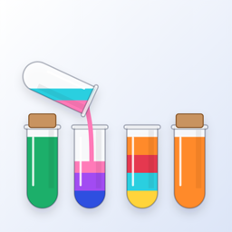
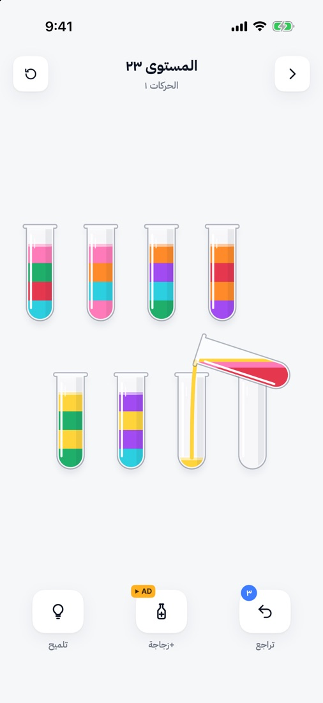
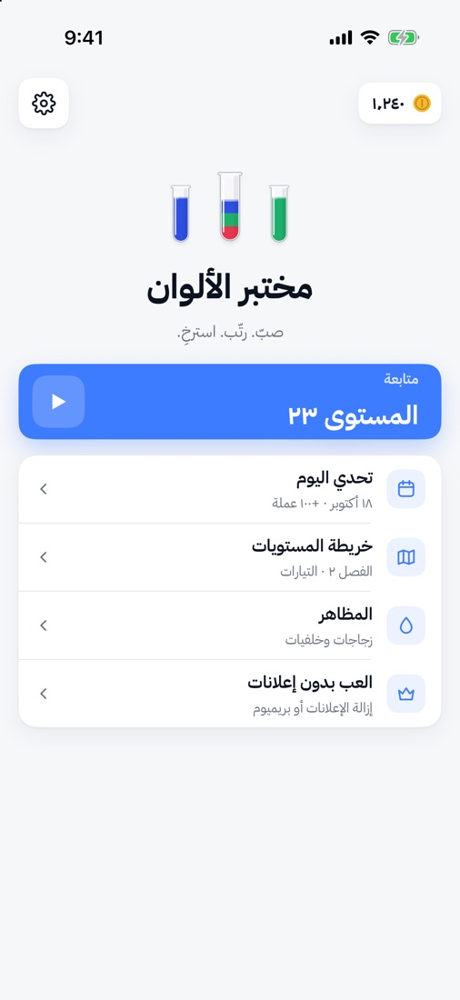
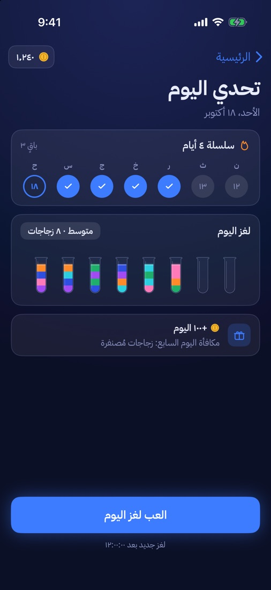
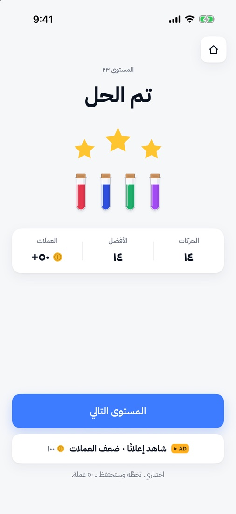
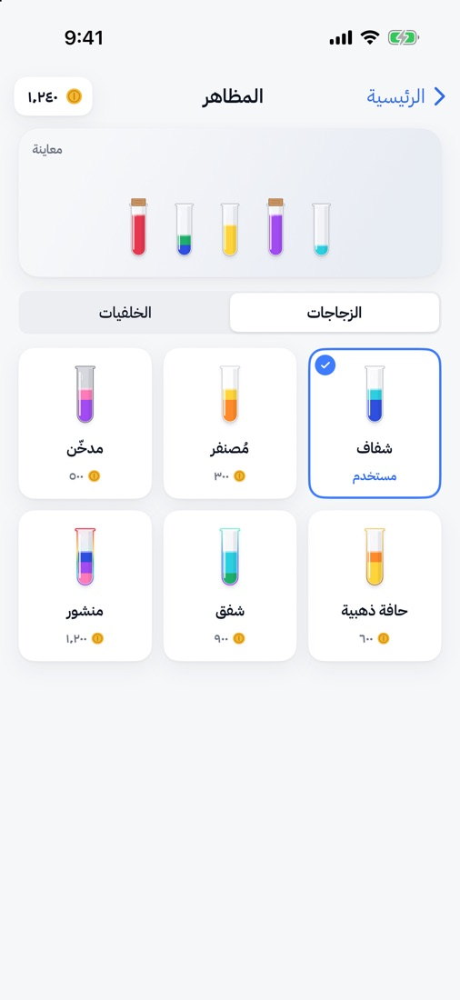

لعب سريع
لا تنتظر انتهاء الحركة. جهّز السكبة التالية والسابقة ما زالت تنسكب.

tint.lab Englishاسكب، رتّب، واسترخِ.
اضغط على أنبوب، ثم على أنبوب آخر، فينسكب اللون العلوي فيه. رتّب كل لون في أنبوب خاص به. لعبة هادئة ومرتبة، ولكل مستوى طريق للحل.


طريقة اللعب
لعبة فرز الماء، وتُسمّى أيضًا ترتيب الألوان أو لعبة الزجاجات، لغز منطقي يُلعب بأنابيب زجاجية فيها سوائل ملوّنة. تبدأ الألوان مختلطة في طبقات، وتسكب من أنبوب إلى آخر حتى يحمل كل أنبوب لونًا واحدًا. لا يمكنك السكب إلا فوق اللون نفسه أو في أنبوب فارغ، وفقط حيث توجد مساحة، لذلك يهمّ ترتيب السكبات. مختبر الألوان لعبة فرز ماء للآيفون والأندرويد: ٢٠٠ مستوى في ١٠ فصول، ولغز يومي جديد، ولعب سريع لا يجعلك تنتظر، بالعربية والإنجليزية.
اضغط على أنبوب فيرتفع. اضغط على أنبوب ثانٍ فينتقل اللون العلوي إليه.
صبّ فوق لون مطابق أو في أنبوب فارغ، وفقط حيث توجد مساحة.
الأنبوب الممتلئ بلون واحد يُغلق بسدادة. أغلق كل الألوان لتنهي المستوى.
المزايا
سهلة التعلّم، وتصعب شيئًا فشيئًا: ألوان أكثر، ثم طبقات مخفية لا يظهر لونها إلا عندما تكشفها.
لا تنتظر انتهاء الحركة. جهّز السكبة التالية والسابقة ما زالت تنسكب.
من «المياه الضحلة» حتى «الطوفان». اجمع حتى ثلاث نجوم بأقل عدد من الحركات. كل مستوى تم التحقق منه بحلّال آلي.
لغز جديد كل يوم، وهو نفسه للجميع. حافظ على سلسلة أيامك لتربح عملات إضافية، وفي اليوم السابع تفتح الزجاجات المُصنفرة.
زجاجات مُصنفرة ومدخّنة وبحافة ذهبية وغيرها، وخلفيات متنوعة، تشتريها بالعملات التي تجمعها.
مظهر زجاجي فاتح في النهار، ومظهر ليلي متوهج في الليل. يتبع جهازك، أو تختار بنفسك من الإعدادات.
فعّلها فيحصل كل سائل على شكل خاص به، في كل طبقة.
واجهة كاملة من اليمين إلى اليسار بالعربية. غيّر اللغة متى شئت من الإعدادات.
بلا حساب وبلا تسجيل دخول. تقدّمك محفوظ على جهازك.



السعر
كل المستويات وتحدي اليوم مجانية. الإعلانات تبقيها كذلك، ولا تظهر أبدًا أثناء اللعب:
شراء واحد، لك للأبد.
شراء واحد، لك للأبد.
لا يوجد اشتراك. يعرض التطبيق السعر بعملتك قبل الشراء.
الدعم
نعم. كل المستويات وتحدي اليوم مجانية، وتعتمد على إعلانات لا تظهر أبدًا أثناء اللعب. وهناك عمليتا شراء اختياريتان لمرة واحدة: «إزالة الإعلانات» و«بريميوم». لا يوجد اشتراك.
إزالة الإعلانات تزيل الشريط الإعلاني من الشاشة الرئيسية والإعلانات بين المستويات.
بريميوم تفعل الشيء نفسه، وتضيف تراجعًا بلا حدود وكل مظاهر الزجاجات والخلفيات. إذا اشتريت بريميوم فلا تحتاج إلى «إزالة الإعلانات».
افتح مختبر الألوان، واضغط على الترس في الشاشة الرئيسية لفتح الإعدادات، ثم المشتريات ← استعادة المشتريات. استخدم حساب Apple (للآيفون) أو حساب Google (للأندرويد) نفسه الذي اشتريت به. الاستعادة مجانية.
شريط إعلاني في الشاشة الرئيسية، وإعلان بملء الشاشة بين بعض المستويات، بعد المستوى العاشر فقط ومرة كل ثلاثة مستويات على الأكثر. إعلانات الأنبوب الإضافي والتراجعات وضعف العملات لا تعمل إلا عندما تختارها. لا يظهر أي إعلان أثناء المستوى.
٢٠٠ مستوى في ١٠ فصول، ٢٠ مستوى في كل فصل، من «المياه الضحلة» حتى «الطوفان»، إلى جانب تحدٍّ يومي جديد كل يوم. كل مستوى تم التحقق منه بحلّال آلي، فهناك دائمًا طريق للحل. ويمكنك إعادة أي مستوى من خريطة المستويات.
لديك ثلاث مرات تراجع مجانية في كل مستوى، وتلميح مجاني، وأنبوب فارغ إضافي عند الحاجة. ويمكنك إعادة المستوى في أي وقت. وإذا لم تبقَ أي حركة، تخبرك اللعبة وتعرض عليك مخرجًا، وتبقى حركاتك.
نعم. كل مستوى يُصنع على هاتفك، فيمكنك اللعب دون إنترنت. الإعلانات والمشتريات فقط تحتاج إلى اتصال.
نعم. مختبر الألوان بالعربية والإنجليزية بالكامل، بواجهة من اليمين إلى اليسار بالعربية. غيّر اللغة من الإعدادات ← اللغة. الأنابيب نفسها لا تنعكس.
لا يوجد حساب ولا تسجيل دخول. مستوياتك ونجومك وعملاتك وسلسلة أيامك وإعداداتك محفوظة على هاتفك فقط، ولا توجد مزامنة بين الأجهزة.
على الآيفون والآيباد بنظام iOS 17 أو أحدث، وعلى هواتف الأندرويد بنظام Android 8.0 أو أحدث.
على الآيفون، التتبع متوقف ما لم تسمح به عندما يسألك التطبيق، ويمكنك تغييره لاحقًا من الإعدادات ← الخصوصية والأمن ← التتبع.
وحيث يلزم اختيار الموافقة، مثل المنطقة الاقتصادية الأوروبية والمملكة المتحدة، افتح مختبر الألوان واذهب إلى الإعدادات ← الخصوصية وخيارات الإعلانات لمراجعته. المزيد في سياسة الخصوصية.